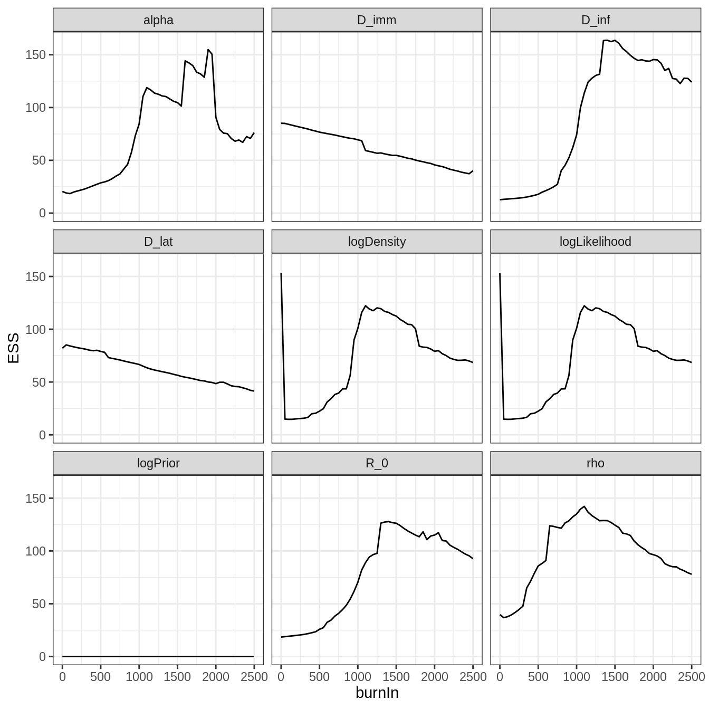
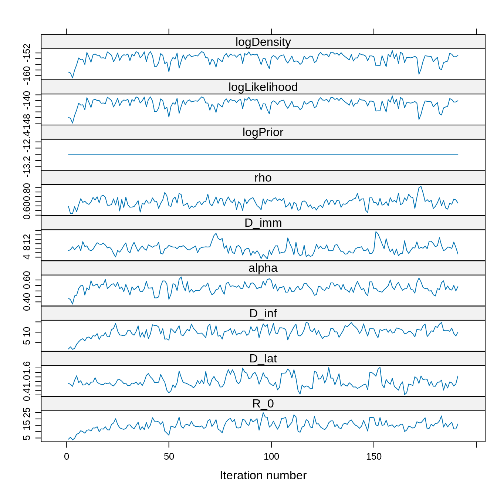
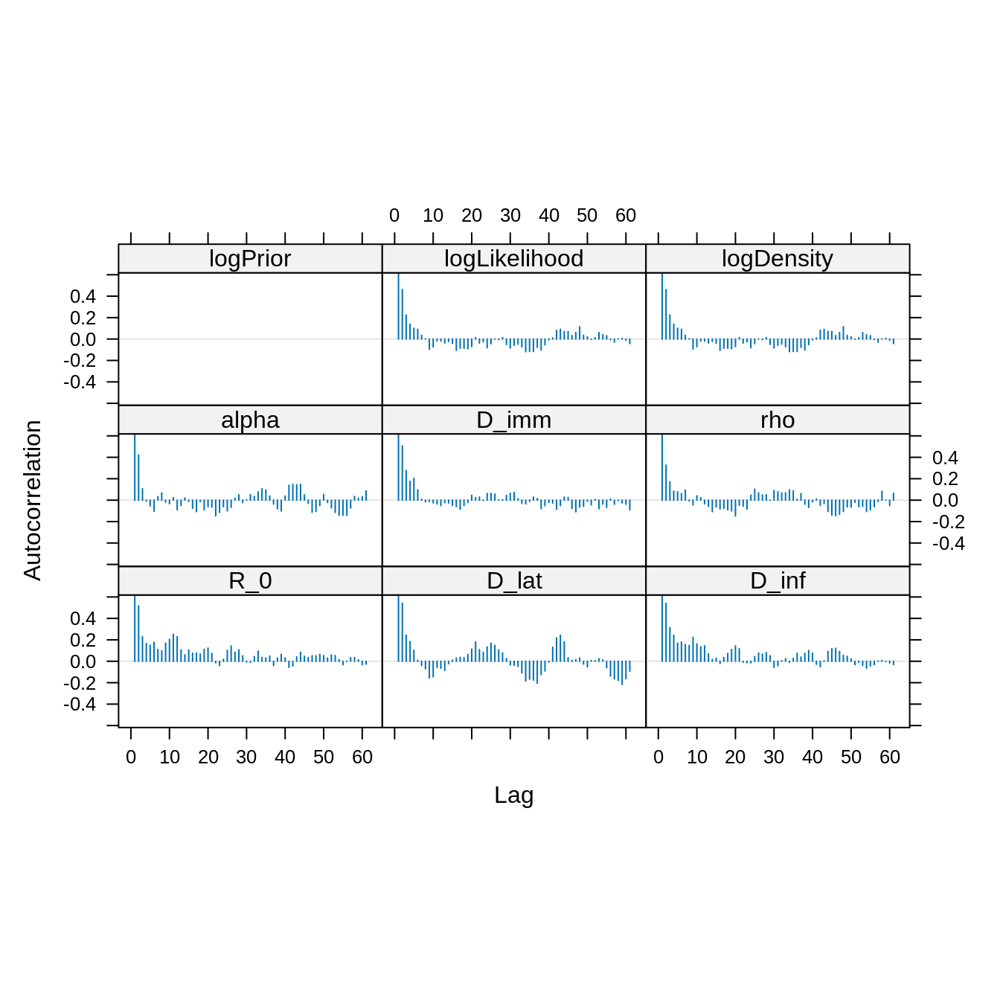
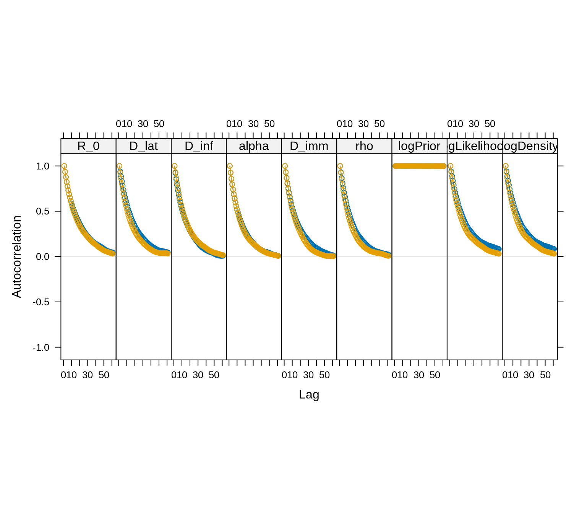
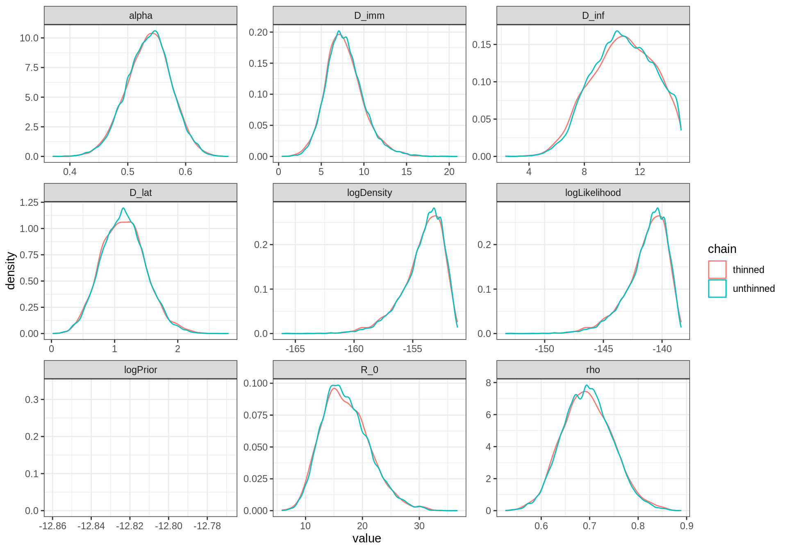
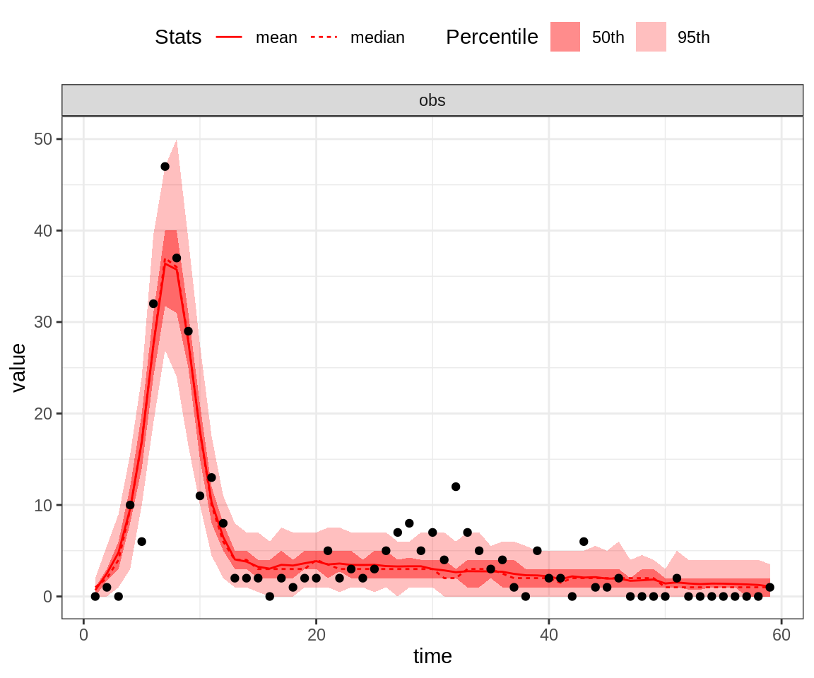
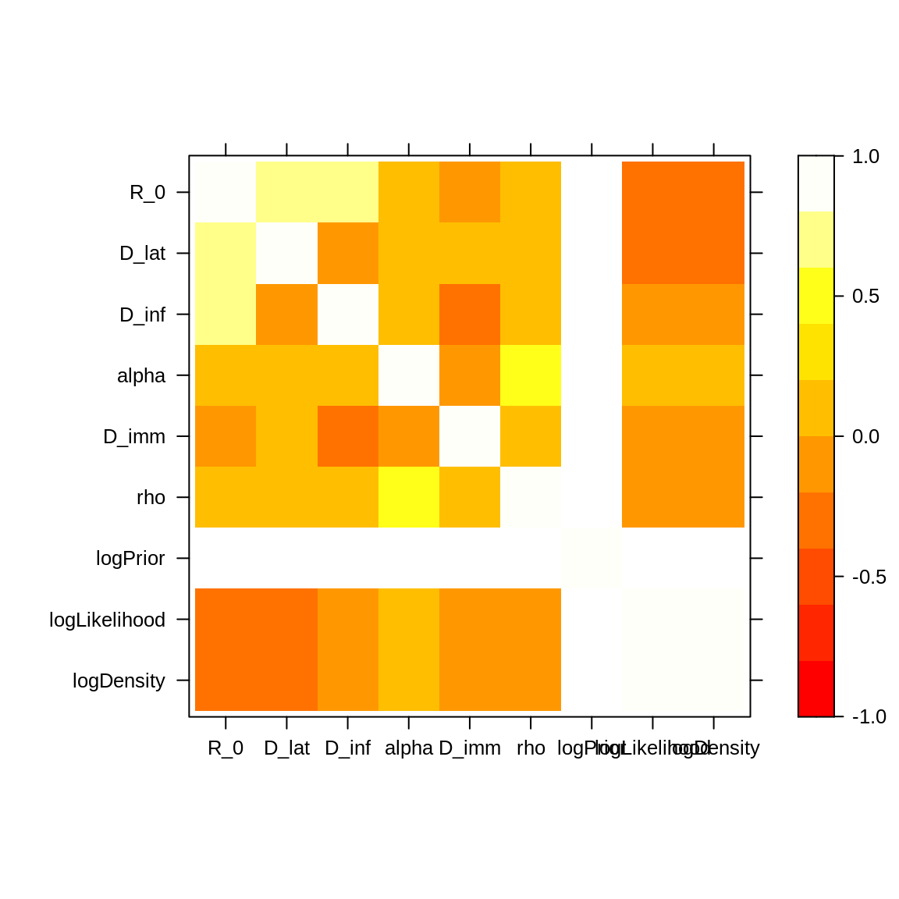

Example: fitting the deterministic SEITL model
Here is an example of possible answers to the practical on fitting the deterministic SEITL model to the Tristan da Cunha outbreak.
Each section below correspond to a section of the practical. Thus, you can have a look at our example for one section and then go back to the practical to answer the following sections.
Although our example refers to the SEITL model, the same commands work for the SEIT4L model (i.e. seit4lDeter instead of seitlDeter).
Setting the MCMC
knitr::read_chunk(here::here("scripts", "snippets", "set-mcmc.r"))You can now go back to the practical and try to run MCMC with those settings.
Run MCMC
If you didn’t manage to run MCMC, or it took too long to obtain a few thousand iterations, you can load our short run as follows:
data(models)
data(mcmcTdcDeterShortRun)
# this should load 2 objects in your environment: mcmcSeitl and mcmcSeitl4.
# Each one is a list of 3 elements returned by mcmcMh
names(mcmcSeitl)
## [1] "trace" "acceptanceRate" "covmatEmpirical"
# the trace contains 9 variables for 5000 iterations
dim(mcmcSeitl$trace)
## [1] 5000 9
# let's have a look at it
head(mcmcSeitl$trace)
## R_0 D_lat D_inf alpha D_imm rho logPrior
## [1,] 2.392456 2.242859 1.929790 0.7964407 11.960271 0.8082664 -12.81448
## [2,] 2.392456 2.242859 1.929790 0.7964407 11.960271 0.8082664 -12.81448
## [3,] 3.946687 1.910482 2.452853 0.6569316 8.528870 0.6593658 -12.81448
## [4,] 3.946687 1.910482 2.452853 0.6569316 8.528870 0.6593658 -12.81448
## [5,] 5.107992 1.511080 2.425485 0.5822499 6.555264 0.5456772 -12.81448
## [6,] 5.107992 1.511080 2.425485 0.5822499 6.555264 0.5456772 -12.81448
## logLikelihood logDensity
## [1,] -434.5553 -447.3698
## [2,] -434.5553 -447.3698
## [3,] -320.2052 -333.0197
## [4,] -320.2052 -333.0197
## [5,] -195.9429 -208.7574
## [6,] -195.9429 -208.7574You can now go back to the practical and analyse this trace.
Short run analysis
Here is an example of analysis for our preliminary run:
# convert to a mcmc object for coda
library("coda")
trace <- mcmc(mcmcSeitl$trace)
# compute the acceptance rate
1 - rejectionRate(trace)
## R_0 D_lat D_inf alpha D_imm
## 0.1726345 0.1726345 0.1726345 0.1726345 0.1726345
## rho logPrior logLikelihood logDensity
## 0.1726345 0.0000000 0.1726345 0.1726345
# between 0.1 and 0.6: looks good!
# let's have a look at the traces
library("lattice") ## for the 'xyplot' command
xyplot(x = trace)
Although the chain was started at a initTheta with a low posterior density, it quickly finds the region of the parameter space with high posterior density. Note also the constant trace of the log-prior since we have assumed a uniform prior.
Overall, it looks like the chain reached its target distribution after 1000 steps.
# Let's find a suitable burn-in::
plotEssBurn(trace)
As anticipated from the trace, discarding the first 1000 iterations maximizes the effective sample size (ESS).
# Let's create a new trace without the burn-in
traceBurn <- burnAndThin(trace, burn = 1000)
xyplot(x = traceBurn)
# Let's check the ESS
effectiveSize(traceBurn)
## R_0 D_lat D_inf alpha D_imm
## 70.38059 66.62130 74.02227 84.33808 69.38730
## rho logPrior logLikelihood logDensity
## 134.97679 0.00000 100.89045 100.89045Although we have 4000 samples remaining after burn-in, the ESS is much smaller. This is due to autocorrelation of the chain.
# autocorrelation plot
acfplot(x = traceBurn, lag.max = 60) The autocorrelation between samples drops substantially for a lag of 20 iterations. We can thin the trace to reduce the autocorrelation.
The autocorrelation between samples drops substantially for a lag of 20 iterations. We can thin the trace to reduce the autocorrelation.
# Let's create a thinned trace
traceBurnThin <- burnAndThin(traceBurn, thin = 20)
xyplot(x = traceBurnThin)
# Let's check the ESS
effectiveSize(traceBurnThin)
## R_0 D_lat D_inf alpha D_imm
## 60.32844 56.31209 56.32156 77.34331 62.12285
## rho logPrior logLikelihood logDensity
## 96.18594 0.00000 69.92988 69.92988Although the thinned trace has 20 times less fewer than the unthinned trace, it has a similar ESS. This is because the autocorrelation has been reduced.
# new autocorrelation plot
acfplot(x = traceBurnThin, lag.max = 60)
Let’s compare the posterior estimates of the thinned and unthinned traces.
# The unthinned trace
summary(traceBurn)
##
## Iterations = 1:4000
## Thinning interval = 1
## Number of chains = 1
## Sample size per chain = 4000
##
## 1. Empirical mean and standard deviation for each variable,
## plus standard error of the mean:
##
## Mean SD Naive SE Time-series SE
## R_0 15.0775 3.80639 0.0601843 0.453719
## D_lat 1.0115 0.25554 0.0040405 0.031308
## D_inf 10.0611 2.49282 0.0394149 0.289740
## alpha 0.5270 0.04049 0.0006403 0.004409
## D_imm 7.9653 2.13142 0.0337008 0.255876
## rho 0.6866 0.04882 0.0007719 0.004202
## logPrior -12.8145 0.00000 0.0000000 0.000000
## logLikelihood -141.0424 1.71260 0.0270786 0.170503
## logDensity -153.8569 1.71260 0.0270786 0.170503
##
## 2. Quantiles for each variable:
##
## 2.5% 25% 50% 75% 97.5%
## R_0 7.6677 12.6097 14.9351 17.6100 22.5097
## D_lat 0.5823 0.8433 0.9635 1.1635 1.5593
## D_inf 4.3501 8.4322 10.1352 11.7960 14.3086
## alpha 0.4339 0.5037 0.5300 0.5541 0.5971
## D_imm 4.3538 6.4310 7.9303 9.0796 12.6237
## rho 0.5886 0.6548 0.6878 0.7179 0.7845
## logPrior -12.8145 -12.8145 -12.8145 -12.8145 -12.8145
## logLikelihood -145.6333 -141.8981 -140.5947 -139.8680 -138.8092
## logDensity -158.4478 -154.7126 -153.4091 -152.6825 -151.6237
# The thinned trace
summary(traceBurnThin)
##
## Iterations = 1:191
## Thinning interval = 1
## Number of chains = 1
## Sample size per chain = 191
##
## 1. Empirical mean and standard deviation for each variable,
## plus standard error of the mean:
##
## Mean SD Naive SE Time-series SE
## R_0 15.0340 3.67915 0.266214 0.473681
## D_lat 0.9966 0.24756 0.017913 0.032989
## D_inf 10.1004 2.42825 0.175702 0.323560
## alpha 0.5284 0.04102 0.002968 0.004664
## D_imm 7.9954 2.11939 0.153354 0.268897
## rho 0.6882 0.04950 0.003582 0.005048
## logPrior -12.8145 0.00000 0.000000 0.000000
## logLikelihood -141.0482 1.72186 0.124589 0.205904
## logDensity -153.8627 1.72186 0.124589 0.205904
##
## 2. Quantiles for each variable:
##
## 2.5% 25% 50% 75% 97.5%
## R_0 7.7944 12.7957 14.8305 17.7131 21.5255
## D_lat 0.5934 0.8350 0.9447 1.1455 1.5276
## D_inf 5.0674 8.5244 10.3264 11.7014 14.2780
## alpha 0.4369 0.5046 0.5279 0.5543 0.6035
## D_imm 4.3360 6.7251 7.9066 9.0377 12.6548
## rho 0.5932 0.6553 0.6877 0.7234 0.7848
## logPrior -12.8145 -12.8145 -12.8145 -12.8145 -12.8145
## logLikelihood -145.4018 -142.0507 -140.5424 -139.8670 -138.8033
## logDensity -158.2162 -154.8651 -153.3569 -152.6815 -151.6178They are very similar. So why thin? Because autocorrelation produces clumpy samples that are unrepresentative, in the short run, of the true underlying posterior distribution. We can check this by comparing the thinned and unthinned distributions using the function plotPosteriorDensity of the fitR package:
plotPosteriorDensity(list(unthinned = traceBurn, thinned = traceBurnThin)) The thinned trace shows a smoother distribution despite having less samples than the unthinned one. This because the local “bumps” of the unthinned distribution are caused by autocorrelated samples.
The thinned trace shows a smoother distribution despite having less samples than the unthinned one. This because the local “bumps” of the unthinned distribution are caused by autocorrelated samples.
You can now go back to the practical and perform a similar analysis for a long-run MCMC.
Long run analysis
Here is an example of an analysis for our long run (50k iterations)
# load mcmc output
data(mcmcTdcDeterLongRun)
# create mcmc objects for both traces
library("coda")
trace1 <- mcmc(mcmcSeitlTheta1$trace)
trace2 <- mcmc(mcmcSeitlTheta2$trace)
# combine traces as mcmc.list object
trace <- mcmc.list(list(trace1, trace2))
# let's have a look
head(trace, 3)
## [[1]]
## Markov Chain Monte Carlo (MCMC) output:
## Start = 1
## End = 4
## Thinning interval = 1
## R_0 D_lat D_inf alpha D_imm rho logPrior
## [1,] 2.000000 2.000000 2.000000 0.8000000 16.00000 0.8500000 -12.81448
## [2,] 2.000000 2.000000 2.000000 0.8000000 16.00000 0.8500000 -12.81448
## [3,] 1.722749 1.481383 1.186734 0.8390849 11.34142 0.8183184 -12.81448
## [4,] 1.722749 1.481383 1.186734 0.8390849 11.34142 0.8183184 -12.81448
## logLikelihood logDensity
## [1,] -445.7795 -458.5939
## [2,] -445.7795 -458.5939
## [3,] -421.8376 -434.6520
## [4,] -421.8376 -434.6520
##
## [[2]]
## Markov Chain Monte Carlo (MCMC) output:
## Start = 1
## End = 4
## Thinning interval = 1
## R_0 D_lat D_inf alpha D_imm rho logPrior
## [1,] 19.33034 2.075211 1.831636 0.1982534 7.921349 0.3198710 -12.81448
## [2,] 19.33034 2.075211 1.831636 0.1982534 7.921349 0.3198710 -12.81448
## [3,] 19.33034 2.075211 1.831636 0.1982534 7.921349 0.3198710 -12.81448
## [4,] 19.57792 2.405110 3.105701 0.1539486 8.018864 0.3203776 -12.81448
## logLikelihood logDensity
## [1,] -295.8436 -308.6581
## [2,] -295.8436 -308.6581
## [3,] -295.8436 -308.6581
## [4,] -261.3233 -274.1378
##
## attr(,"class")
## [1] "mcmc.list"
# acceptance rate
1 - rejectionRate(trace)
## R_0 D_lat D_inf alpha D_imm
## 0.1954239 0.1954239 0.1954239 0.1954239 0.1954239
## rho logPrior logLikelihood logDensity
## 0.1954239 0.0000000 0.1954239 0.1954239
# close to the optimal value of 0.234
# ESS
effectiveSize(trace)
## R_0 D_lat D_inf alpha D_imm
## 2556.169 3062.908 2647.090 3281.971 3172.580
## rho logPrior logLikelihood logDensity
## 3539.099 0.000 3044.446 3044.446
# plot the traces
library("lattice") ## for the 'xyplot' command
xyplot(trace) Note that the acceptance rate and the ESS are computed for the combined chain whereas the traces are plotted for each chain. Also, given the very high ESS we can reasonably choose a burn-in visually, say 5000 iterations.
Note that the acceptance rate and the ESS are computed for the combined chain whereas the traces are plotted for each chain. Also, given the very high ESS we can reasonably choose a burn-in visually, say 5000 iterations.
traceBurn <- burnAndThin(trace, burn = 5000)
# removing the burn-in increases the ESS
effectiveSize(traceBurn)
## R_0 D_lat D_inf alpha D_imm
## 2495.223 3024.481 3132.444 3201.725 3188.532
## rho logPrior logLikelihood logDensity
## 3350.921 0.000 2681.293 2681.293
# autocorrelation
acfplot(traceBurn, lag.max = 60)
Again, given the very high ESS, we can be quite generous in our choice of the thinning.
# Thinning: let's keep 1 iteration every 40
traceBurnThin <- burnAndThin(traceBurn, thin = 40)
xyplot(traceBurnThin) However, let’s compare the thinned and unthinnned distributions.
However, let’s compare the thinned and unthinnned distributions.
# Note that plotPosteriorDensity can take a list of mcmc.list It will plot the
# different mcmc.list by combining their elements Let's plot the combined
# unthinned trace vs the combined thinned trace.
plotPosteriorDensity(list(unthinned = traceBurn, thinned = traceBurnThin))
In contrast to the previous short-run, they are almost no difference between the thinned and unthinned chains. Indeed, with such a long chain, the clumpy autocorrelation has been averaged out!
In fact, there are several references that show that the longer (unthinned) chain usually yields better estimates of the true posterior than the shorter thinned chain, even for percentiles in the tail of the distribution. That said, thinning can be useful for other reasons, such as memory or time constraints in post-chain processing.
Now, we can compare whether the two independent chains, started at theta1 and theta2, have converged to the same posterior distribution
densityplot(traceBurnThin) Since the chains have converged to the same posterior, we can use the combined estimates
Since the chains have converged to the same posterior, we can use the combined estimates
# the function summary combines the chains of a mcmc.list
summary(traceBurnThin)
##
## Iterations = 1:1098
## Thinning interval = 1
## Number of chains = 2
## Sample size per chain = 1098
##
## 1. Empirical mean and standard deviation for each variable,
## plus standard error of the mean:
##
## Mean SD Naive SE Time-series SE
## R_0 17.1056 4.18077 0.089216 0.1006106
## D_lat 1.1431 0.34989 0.007467 0.0083788
## D_inf 10.8010 2.23188 0.047627 0.0501479
## alpha 0.5364 0.03814 0.000814 0.0008609
## D_imm 7.7305 2.20336 0.047019 0.0505641
## rho 0.6958 0.05228 0.001116 0.0011299
## logPrior -12.8145 0.00000 0.000000 0.0000000
## logLikelihood -141.3144 1.76904 0.037750 0.0428708
## logDensity -154.1289 1.76904 0.037750 0.0428708
##
## 2. Quantiles for each variable:
##
## 2.5% 25% 50% 75% 97.5%
## R_0 10.1186 14.1379 16.7421 19.7520 26.1080
## D_lat 0.4979 0.8885 1.1353 1.3700 1.8940
## D_inf 6.4580 9.2290 10.8903 12.5063 14.6617
## alpha 0.4595 0.5110 0.5373 0.5622 0.6075
## D_imm 3.8619 6.2249 7.5466 8.9910 12.7175
## rho 0.6002 0.6592 0.6937 0.7321 0.8025
## logPrior -12.8145 -12.8145 -12.8145 -12.8145 -12.8145
## logLikelihood -145.6336 -142.1916 -140.9629 -140.0194 -138.8614
## logDensity -158.4481 -155.0061 -153.7774 -152.8339 -151.6759Running several independent chains starting from different parts of the parameter space allows us to check whether the posterior distribution is multi-modal. If so, then we must be careful when combining the chains. For instance, an estimate of the mean computed with summary won’t be meaningful for a parameter with a multi-modal posterior.
By contrast, for a unimodal posteriors, combining chains is an efficient way to increase the ESS and the precision of the posterior estimates. Furthermore, running several “shorter” chains in parallel is faster than running one “long” chain.
Finally, let’s assess the fit of the deterministic SEITL model.
# load data
data(fluTdc1971)
# the same initState as for the fit
initState <- c(S = 279, E = 0, I = 2, T = 3, L = 0, Inc = 0)
# by default plotPosteriorFit summarize the fit of 100 thetas sampled from the
# posterior
plotPosteriorFit(trace = trace, fitmodel = seitlDeter, initState = initState, data = fluTdc1971)
# alternatively, one can plot the fit of the mean of the posterior (in this
# case the observation is replicated 100 times)
plotPosteriorFit(trace = trace, fitmodel = seitlDeter, initState = initState, data = fluTdc1971,
posteriorSummary = "mean")
# or using the maximum a posteriori (MAP) estimate
plotPosteriorFit(trace = trace, fitmodel = seitlDeter, initState = initState, data = fluTdc1971,
posteriorSummary = "max")
Note that the 95% credible intervals (CI) for the posterior fit under the MAP captures the highest data point. By contrast, the fit of the second peak seems quite poor, even for the MAP.
You can now go back to the practical and look at the posterior correlations between the parameters.
Correlations
The correlation of the posterior distribution can be investigated using levelplot.
library("lattice") ## for the 'levelplot command
# levelplot doesn't accept `mcmc.list`, we pass the first `mcmc` only.
levelplot(traceBurnThin[[1]], col.regions = heat.colors(100))
Note the strong positive correlations (~0.8) between \(R_0\) and \(D_{lat}\) and between \(R_0\) and \(D_{inf}\). In order to explain the wide 95% CIs of \(R_0\) and \(D_{inf}\), let’s have a look at the contact rate \(\beta = R_0/D_{inf}\).
with(as.data.frame(traceBurnThin[[1]]), quantile(R_0/D_inf, probs = c(0.025, 0.25,
0.5, 0.75, 0.975)))
## 2.5% 25% 50% 75% 97.5%
## 1.112567 1.394826 1.584295 1.783682 2.192854The posterior value of \(\beta\) varies somewhat less than the posterior values of \(R_0\) and \(D_\mathrm{inf}\). Indeed, this parameter is constrained by the shape of the initial phase of the outbreak. Conversely, there are an infinite number of combinations of \(R_0\) and \(D_{inf}\) that lead to the same \(\beta\), hence their wide 95% CIs.
A second effect that could explain the wide posterior density in \(R_0\) is the very high attack rate. Indeed, once \(R_0>5\) it doesn’t make much difference whether \(R_0\) is equal to, say, 10 or 20.
We can also note that the posterior estimate of \(D_{inf} = 11\) days (95% CI: \([6-15]\)) is biologically unrealistic based on previous empirical estimates. However, our approach did not include any prior information as the default seitlDeter fitmodel comes with uniform priors for all parameters.
In order to include previous empirical information on \(D_{lat}\) and \(D_{inf}\), let’s modify the dPrior function of seitlDeter as follows:
seitlDeter$dPrior <- function(theta, log = FALSE) {
# package with truncated normal distribution
library(truncnorm)
logPriorR0 <- dunif(theta[["R_0"]], min = 1, max = 50, log = TRUE)
# normal distribution with mean = 2 and sd = 1 and truncated at 0
logPriorLatentPeriod <- log(dtruncnorm(theta[["D_lat"]], a = 0, b = Inf, mean = 2,
sd = 1))
# normal distribution with mean = 2 and sd = 1 and truncated at 0
logPriorInfectiousPeriod <- log(dtruncnorm(theta[["D_inf"]], a = 0, b = Inf,
mean = 2, sd = 1))
logPriorTemporaryImmunePeriod <- dunif(theta[["D_imm"]], min = 0, max = 50, log = TRUE)
logPriorProbabilityLongTermImmunity <- dunif(theta[["alpha"]], min = 0, max = 1,
log = TRUE)
logPriorReportingRate <- dunif(theta[["rho"]], min = 0, max = 1, log = TRUE)
logSum <- logPriorR0 + logPriorLatentPeriod + logPriorInfectiousPeriod + logPriorTemporaryImmunePeriod +
logPriorProbabilityLongTermImmunity + logPriorReportingRate
return(ifelse(log, logSum, exp(logSum)))
}Note the choice of a truncated normal distribution since \(D_{lat}\) and \(D_{inf}\) must be positive.
You can now go back to the practical and run a MCMC with this informative prior.
Informative priors
Here we combine both chains with informative priors and compare the posterior distribution with the one above.
library("coda")
# create mcmc object
traceInfo1 <- mcmc(mcmcSeitlInfoPriorTheta1$trace)
traceInfo2 <- mcmc(mcmcSeitlInfoPriorTheta2$trace)
# combine in a mcmc.list
traceInfo <- mcmc.list(traceInfo1, traceInfo2)
# burn and thin as the chain with uniform prior (see above sections)
traceInfoBurnThin <- burnAndThin(traceInfo, burn = 5000, thin = 40)
# check that both chains converged to the same posterior
plotPosteriorDensity(traceInfoBurnThin)
# compare the effect of informative priors on the posterior distribution
plotPosteriorDensity(list(unif = traceBurnThin, info = traceInfoBurnThin))
\(R_0\) and \(D_{inf}\) have very different posterior distributions. This is expected as there is an informative prior on \(D_{inf}\), and \(R_0\) is strongly correlated to \(D_{inf}\). Note also that the mode of all other parameters have changed, though less than \(D_{inf}\) and \(R_0\). This illustrate the influence that one prior can have on the full posterior distribution.
You can now go back to the practical.
Model selection
# combine the two chains in a data frame
library("dplyr") # needed for the 'bind_rows' function
library("purrr") # needed for the 'map' function
traceCombined <- bind_rows(purrr::map(traceInfoBurnThin, as.data.frame))
# take the mean of theta
thetaBar <- colMeans(traceCombined[seitlDeter$thetaNames])
print(thetaBar)
## R_0 D_lat D_inf alpha D_imm rho
## 7.6292160 1.2840236 3.6875805 0.4760604 9.1959368 0.6476576
# compute its log-likelihood
initState <- c(S = 279, E = 0, I = 2, T = 3, L = 0, Inc = 0)
logLikeThetaBar <- dTrajObs(seitlDeter, thetaBar, initState, data = fluTdc1971, log = TRUE)
print(logLikeThetaBar)
## [1] -142.7907
# and its deviance
dThetaBar <- -2 * logLikeThetaBar
print(dThetaBar)
## [1] 285.5815
# the effective number of parameters
pD <- var(-2 * traceCombined$logLikelihood)/2
print(pD)
## [1] 8.614696
# and finally the DIC
dic <- dThetaBar + 2 * pD
print(dic)
## [1] 302.8109Follow this link to go back to the practical.
This web site and the material contained in it were originally created in support of an annual short course on Model Fitting and Inference for Infectious Disease Dynamics at the London School of Hygiene & Tropical Medicine. All material is under a MIT license. Please report any issues or suggestions for improvement on the corresponding GitHub issue tracker. We are always keen to hear about any uses of the material here, so please do get in touch using the Discussion board if you have any questions or ideas, or if you find the material here useful or use it in your own teaching.